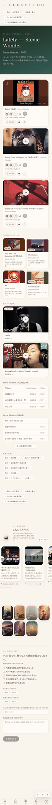
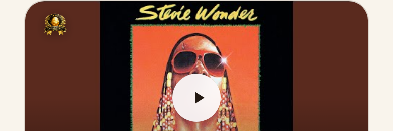
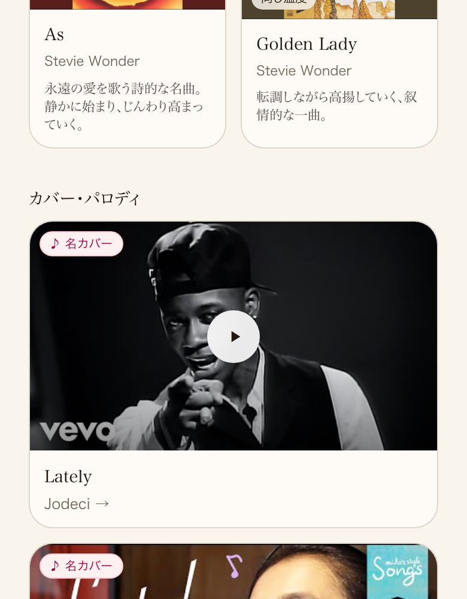

共有資料の一覧 ／ 確認ページ #690 案件#690 Lately バッジ・カード高さ 実測PASS(正しいURLで再確認)
#690 案件#690 Lately バッジ・カード高さ 実測PASS(正しいURLで再確認)
2026-09-11 実装・main合流・本番(GitHub Pages)反映まで実測確認
過去の確認ページが誤ったURL(artist=stevie-wonder)を指しており、そのページは「見つかりませんでした」になるためVerifierが毎回不合格にしていた。正しいURL(artist=stevie)で実測すると、バッジ比率・カード高さ・棚編集ボタンの重なりは全項目PASS。コピーも書き直し済み、カバー・パロディも本人動画と同じ全幅サイズで表示。
② 数字
13.8%バッジ短辺比率(目標13.8%±2pt・6/6件一致)
0px同じ行のカード高さ差(4グループとも)
0件棚編集ボタンとバッジの重なり
③ 実データでのスクリーンショット
① 全体(本文差し替え後)
② バッジ拡大(左上・小さい)
③ カバー・パロディ(本人動画と同じ全幅)
④ 押せるリンク